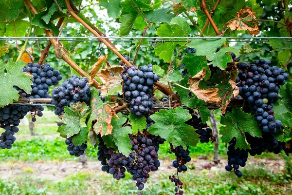

Home › Wine regions › Niagara Peninsula
Niagara Peninsula wine region

Photo: Wendy Shervington on Unsplash
Ontario's lake-cooled wine heartland and the world's best-known source of icewine.
Cool-climate wine country clustered around the Great Lakes in Ontario and the Okanagan Valley in British Columbia, famous for icewine and increasingly for Riesling, Chardonnay and Pinot Noir.
Climate and soil
Cool continental climate softened by Lake Ontario: the deep lake stores summer heat into autumn and cools spring, delaying budbreak past the frost risk, while the Niagara Escarpment behind the vineyards keeps air moving. Soils are glacial clay and loam with limestone and sandy pockets, gravellier on the benches below the escarpment.
Key areas and appellations
Niagara Escarpment, Niagara-on-the-Lake, Short Hills Bench, Twenty Mile Bench, Beamsville Bench, Vinemount Ridge, Lincoln Lakeshore, Creek Shores, Four Mile Creek, Niagara Lakeshore, Niagara River, St. David's Bench
Good to know
Ontario's largest appellation under VQA rules. Canadian icewine must come from grapes frozen naturally on the vine and picked at -8°C or colder, usually in December or January. Inniskillin's 1989 Vidal Icewine winning the Grand Prix d'Honneur at Vinexpo in 1991 put Niagara on the world map; today its dry Riesling, Chardonnay and Cabernet Franc are just as worth exploring.
The grapes of Niagara Peninsula
- Riesling (white): peach, lime, petrol, honey. Best known in Mosel, Alsace, Finger Lakes.
- Chardonnay (white): apple, lemon, butter, oak. Best known in Burgundy, California, Australia.
- Cabernet Franc (red): red cherry, herbs, pepper. Best known in Loire, Bordeaux.
- Pinot Noir (red): red cherry, earth, mushroom. Best known in Burgundy, Oregon, New Zealand.
- Vidal Blanc (white): peach, tropical, honey. Best known in Canada, Finger Lakes.
Notable producers in Niagara Peninsula
- Inniskillin
- Cave Spring
- Tawse
- Henry of Pelham
- Hidden Bench
- Stratus
- Château des Charmes
- Flat Rock Cellars
- Pearl Morissette
Official appellations
| Appellation | Status | Style | Grapes |
|---|---|---|---|
| Niagara Peninsula Ontario's main appellation, between Lake Ontario and Lake Erie, with ten sub-appellations; famous for icewine as well as cool-climate Riesling and Chardonnay. | VQA | White, Red, Sweet, Sparkling | Riesling, Chardonnay, Cabernet Franc, Vidal Blanc |
Niagara Peninsula wines to try
Inniskillin Vidal Icewine
Niagara Peninsula · Vidal Blanc
Luscious and bright: apricot, honey, mango and vivid acidity.
Food: Fruit tarts, blue cheese, crème brûlée
Inniskillin Cabernet Franc Icewine
Niagara Peninsula · Cabernet Franc
Rosé-hued icewine: strawberry, rhubarb and honey.
Food: Berry desserts, chocolate
Inniskillin Vidal Gold Icewine
Niagara Peninsula · Vidal
Oak-aged Vidal icewine: honey, apricot and spice.
Food: Foie gras, fruit tarts
Cave Spring Estate Riesling
Niagara Peninsula · Beamsville Bench VQA · Riesling
Escarpment Riesling with lime, nectarine and wet-stone tension, just off-dry and very refreshing.
Food: Pork schnitzel, sushi
Tawse Quarry Road Chardonnay
Niagara Peninsula · Vinemount Ridge VQA · Chardonnay
Limestone-grown Chardonnay with lemon curd, hazelnut and a taut, chalky finish that recalls Burgundy.
Food: Pan-fried halibut, roast chicken with lemon
Tawse Quarry Road Riesling
Niagara Peninsula · Vinemount Ridge VQA · Riesling
From limestone bedrock on the Vinemount Ridge, an off-dry-leaning Riesling of lime, green apple and wet slate, with a racy acidity that keeps it feeling dry.
Food: Thai green papaya salad
Food to try with Niagara Peninsula wines
- Salmon: Salmon is rich enough for a light red: low-tannin Pinot Noir won't clash with the oily fish, and creamy Chardonnay matches its texture.
- Spicy curry: A touch of sweetness and low alcohol in off-dry Riesling cool chilli heat, while fruity rosé handles aromatic spice without turning bitter.
- Roast chicken: Roast chicken is a versatile partner; lightly oaked Chardonnay or a soft, low-tannin Pinot Noir or Merlot suits crisp skin and savoury gravy.
- Cheese board: Mixed cheeses need a mixed line-up: Riesling for soft and blue cheeses, soft Merlot for hard cheeses, and Prosecco's bubbles to refresh.
- Beef bourguignon: The beef is braised in red Burgundy, so Pinot Noir mirrors its earthy mushroom and bacon flavours without overpowering the tender meat.
- Coq au vin: Red Burgundy or Beaujolais suits chicken braised in wine with mushrooms and lardons, adding red-berry fruit and earthy notes.
More wine regions in Canada
See Niagara Peninsula on the wine map
The Wine Reference newsletter
New wines, stories and career guides, one email a week at most.
Over 18s only. Unsubscribe any time with one click. Your email is stored securely by Kit and never shared.
Support The Wine Reference
This guide is free, with no paywall. If it helped you choose a bottle, you can buy me a glass and keep it growing.
🍷 Buy me a glass